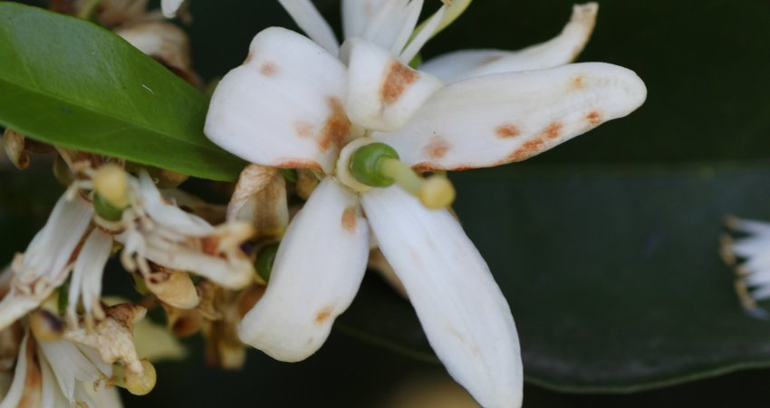
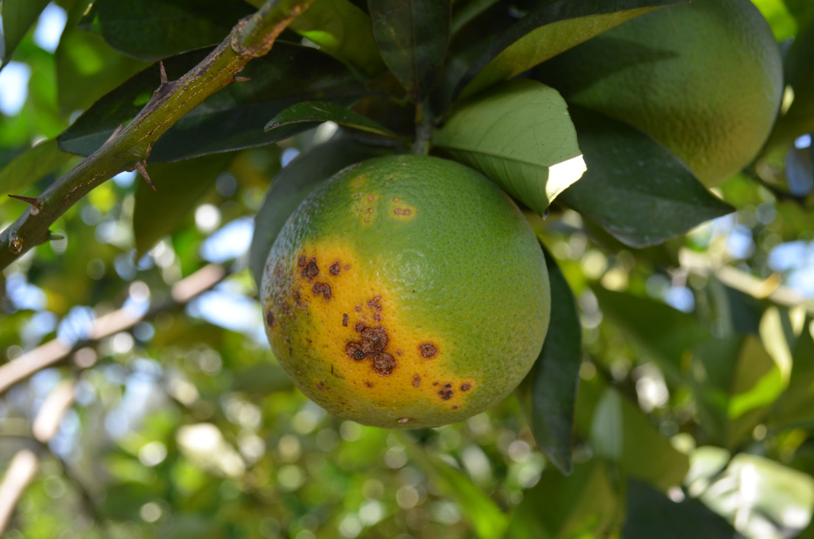
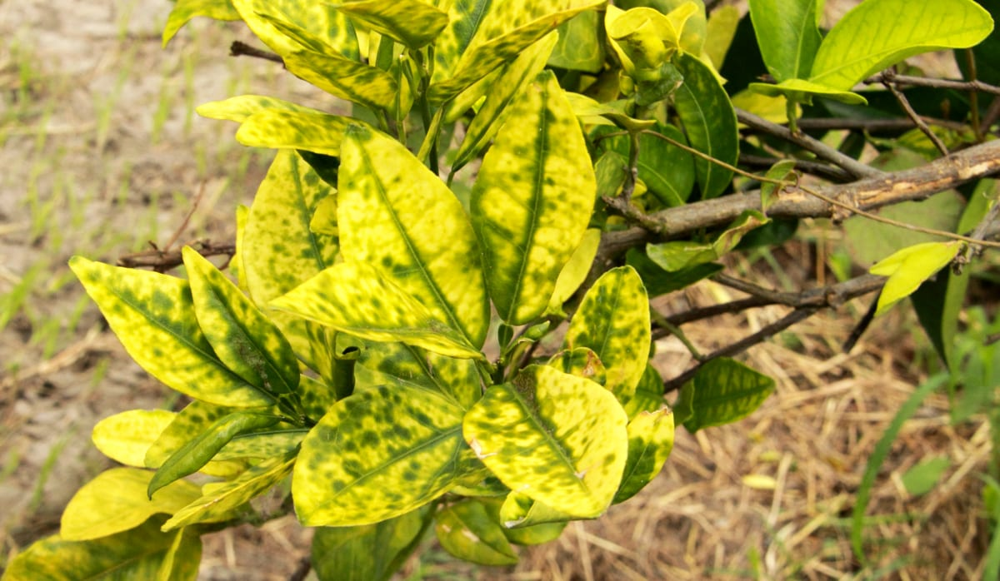
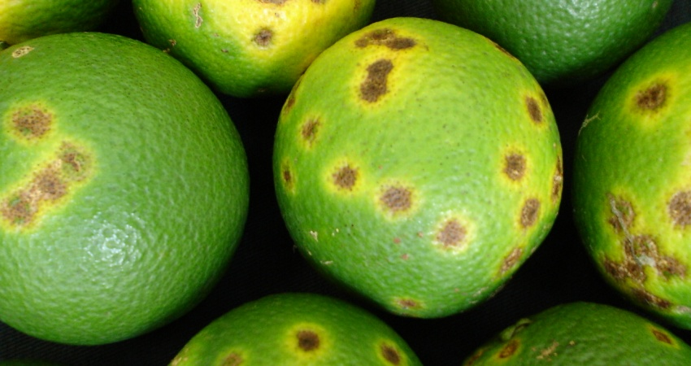

CONHEÇA ABAIXO AS MELHORES ÉPOCAS PARA CULTIVO DE CADA TIPO DE LARANJA

ﾠDOENÇAS CAUSADAS POR FUNGOS E BACTÉRIAS

PODRIDÃO FLORAL
Essa doença é causada por um fungo chamado Colletotrichum spp, no qual ataca principalmente a parte da flor da laranjeira. Dessa forma quando o fruto da árvore cai, a flor continua na árvore como se fosse uma pequena estrela, por isso, a doença também é chamada “estrelinha”. Condições climáticas favorecem o a disseminação do fungo.
Os primeiros sintomas da podridão floral aparecem normalmente dois a sete dias após a contaminação da laranjeira. No início, surgem lesões alaranjadas nas flores da laranjeira. Com o avanço da doença, o estigma da flor necrosa e se torna escuro. Posteriormente, as laranjinhas em desenvolvimento se tornam amareladas e caem.

CANCRO CÍTRICO
O cancro cítrico é causado pela bactéria Xanthomonas citri, transmitida de diversas formas, como por máquinas e ferramentas contaminados, vento e água da irrigação (ou chuva). Embora as lesões nas laranjas não atinjam a polpa e não comprometam a produção do suco, a doença causa a queda de grande parte dos frutos, o que prejudica a produtividade. Além disso, as laranjas in natura se tornam impróprias para a exportação.
Os principais sintomas do cancro cítrico são pequenas saliências amarronzadas nos frutos. Com o avanço do cancro cítrico, surgem cloroses em volta das lesões. Essas lesões podem cobrir o fruto e as folhas por completo. Por fim, os frutos e as folhas caem.

GREENING
O greening, amarelão dos citros ou HLB é causado pela bactéria Candidatus Liberibacter spp., transmitida pelo inseto Diaphorina citri. Trata-se de uma das doenças mais comuns dos citros na atualidade, cujos sintomas podem surgir nos frutos e nas folhas. Com o agravamento da doença, a laranjeira pode morrer.
Os principais sintomas do greening são cloroses assimétricas nas folhas. Também ocorre engrossamento das folhas e aumento da espessura da nervura central das folhas. As laranjas deformam e suas sementes abortam. Além disso, ocorre aumento da acidez. Com o avanço da doença, os frutos caem. Sem falar que a doença causa deficiência de ferro, manganês e zinco.

LEPROSE DOS CITROS
A leprose dos citros é causada pelo Citrus leprosis virus, transmitido por ácaros disseminados por restos culturais e frutos contaminados, pelo vento e pelo homem. Os principais sintomas da leprose dos citros são lesões amarronzadas e com halo amarelo nos frutos, nas folhas e nos ramos.
Com o avanço da doença, os ramos secam e as folhas e os frutos caem. A fotossíntese da planta também é comprometida. Além de depreciar o valor comercial das laranjas, a produtividade do pomar é significativamente comprometida.